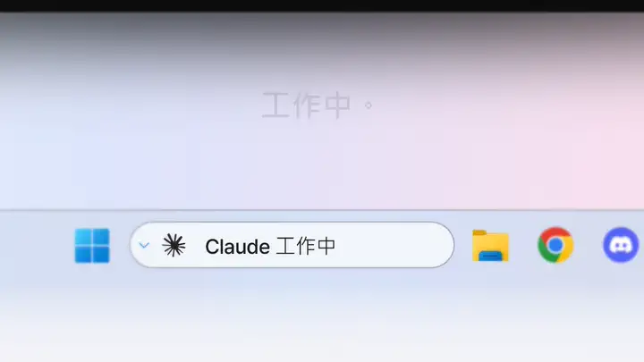
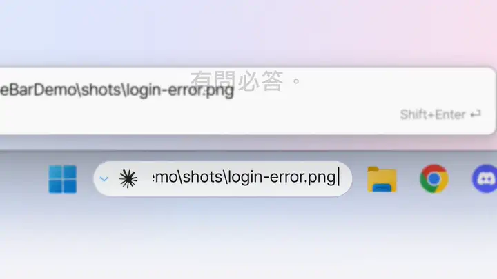
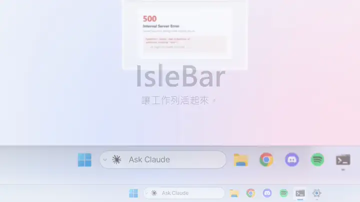
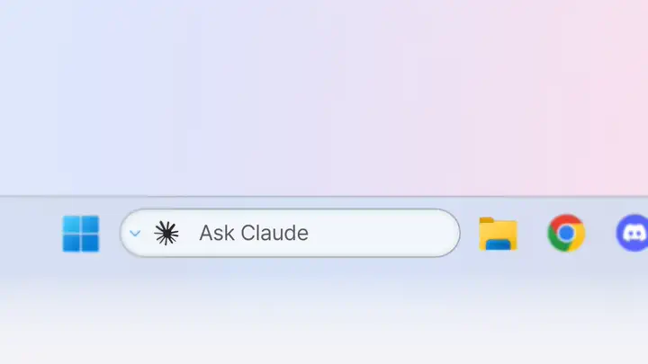
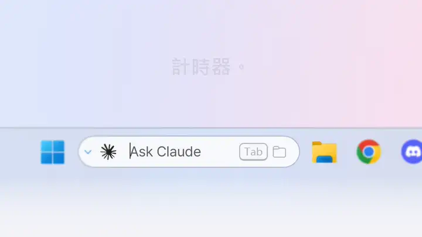
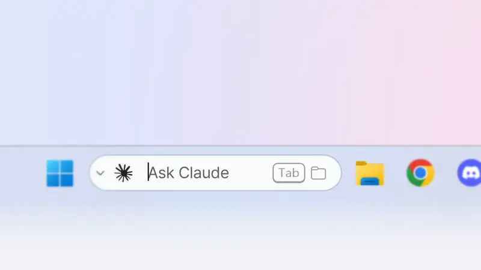
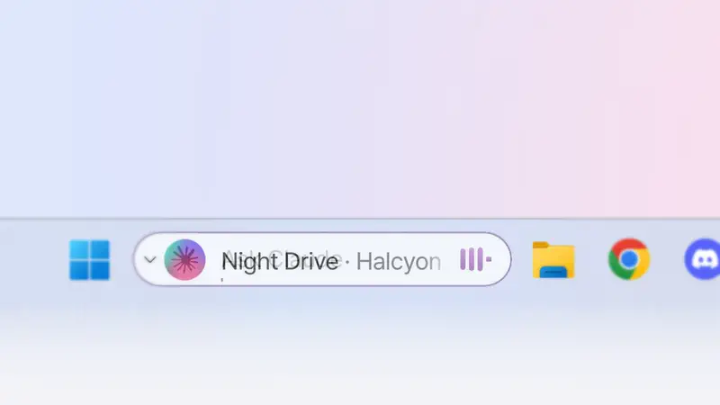
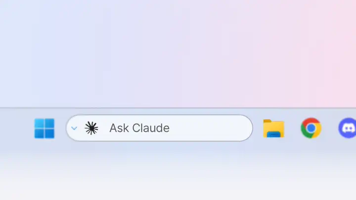
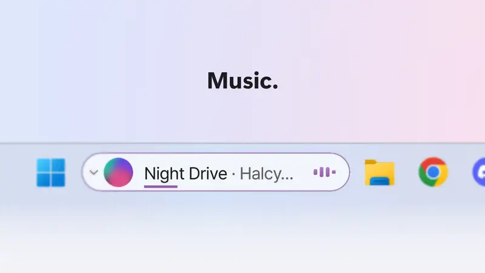

在工作列直接提問。
點一下膠囊或按 Ctrl+Alt+C，輸入你想做的事，再按 Enter。終端機隨即開啟，Claude Code 或 Codex 帶著你的問題開始工作。
- ↑ ↓ 可叫回最近 50 則提問。
- 長問題會在列上方預覽；Shift+Enter 開啟多行輸入框。
- ⌄ 按鈕可保留你的選項：工作階段、模型、思考強度、權限、遠端控制。
讓 Windows 11 工作列活起來。在搜尋框裡向 Claude Code 或 Codex 提問——它在處理中、在等你，還是已經完成，一眼就知道。
IsleBar 可在 Windows 11（x64）上執行，工作列搜尋需顯示為搜尋框或圖示。
處理中。等你回覆。已完成。搜尋框會告訴你——Claude Code 或 Codex 工作時，你大可去忙別的。橘色邊框代表它在等你回答，綠色代表已經完成。

膠囊就待在搜尋框原本的位置，變的只有裡面的內容。

點一下膠囊或按 Ctrl+Alt+C，輸入你想做的事，再按 Enter。終端機隨即開啟，Claude Code 或 Codex 帶著你的問題開始工作。

把螢幕擷取畫面或記錄檔拖到膠囊上——檔案路徑會填進輸入框，接著提問就好。

Codex CLI 同樣顯示 處理中 · 等你回覆 · 已完成。它的標誌讀取自你電腦上已安裝的 Codex 擴充功能——IsleBar 本身不附帶任何 OpenAI 標誌。

輸入 25m、90s 或 1h 30m，按 Enter。只有變動的數字會滾動。

按 Tab 開始輸入——所有磁碟中的相符結果隨打隨現，顯示在工作列上方，由 Everything 提供支援。
Chrome、Edge、Firefox 等瀏覽器的下載會在進行時顯示，完成後顯示檔名和已完成。點一下即可在檔案總管中查看該檔案。

Spotify、瀏覽器裡的 YouTube 以及大多數播放器，都會顯示專輯封面、音量跳動條和專輯配色的進度條。滑鼠移上去即可 ⏮ ⏯ ⏭。
歌播到一半時代理程式完成了工作，綠色邊框會亮起，但不會擋住音樂。

耳機、充電、網路、複製的文字、CPU 或記憶體負載過高、專注時段、行事曆活動、麥克風或相機使用中——每則都只顯示片刻，隨即讓開。沒有彈出視窗。
每種顏色只有一個意思：橘色表示 AI 在等你回答，紅色表示需要處理（電量不足，或 AI 因用量上限或錯誤而停止），綠色表示事情已完成。勿擾期間不播放提示音，全螢幕遊戲和影片時也可以靜音。

IsleBar 跟隨 Windows 佈景主題，切換的瞬間就會換色——不必重新啟動。
是的——以 MIT 授權免費開放原始碼。歡迎在 GitHub 上提供修正、想法和意見回饋。
安裝 IsleBar 並開啟 Claude Code / Codex 連結（安裝時勾選一項）。需要你回答時膠囊顯示橘色邊框，完成時顯示綠色邊框並播放提示音，不必一直盯著終端機。
只有 AI 功能需要——在列上提問，以及查看處理中 · 等你回覆 · 已完成。音樂、計時器、下載和通知不需要它們也能使用；檔案搜尋需要 Everything。
不會。它只在你的電腦上執行。當機報告需由你主動開啟，且只包含錯誤、版本和基本裝置資訊——絕不包含視窗標題、檔案、提示詞或你的 IP。隱私權政策。
請選擇 其他資訊 → 仍要執行。程式碼簽章正在準備中。
設定 › 應用程式 › IsleBar › 解除安裝。原本的搜尋框會恢復，IsleBar 的掛鉤也會一併移除(商店版請先在 IsleBar 設定中關閉 Claude Code / Codex 連線)。
English, 简体中文, 繁體中文, Français, Deutsch, Italiano, 日本語, 한국어, Português, Español——跟隨你的 Windows 語言。
遇到問題、有點子或疑問——歡迎在 GitHub 上或透過電子郵件告訴我們。